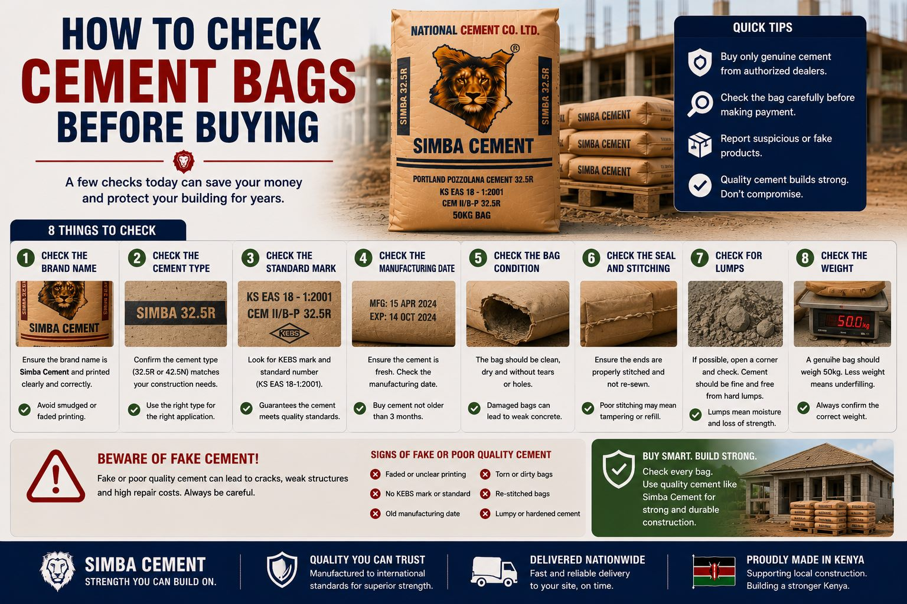

Cement Products
Simba Cement 32.5R vs 42.5N
Compare typical applications for Simba Cement 32.5R and 42.5N when planning masonry, plastering, foundations and structural concrete.
Read guide →
Construction Knowledge Hub
Practical cement guides, product comparisons, concrete advice, storage tips and project-planning information for builders across Kenya.
Latest Guides
Search or filter all 23 complete guides by the subject that matters to your project.
Compare typical applications for Simba Cement 32.5R and 42.5N when planning masonry, plastering, foundations and structural concrete.
Read guide →
Understand how cement choice differs across foundations, masonry, plastering, slabs and other stages of a residential project.
Read guide →
Review key factors to consider when selecting cement for foundation concrete, footing work and structural construction.
Read guide →
Learn what to consider when selecting cement for internal and external plastering, mortar work and wall finishes.
Read guide →
Explore cement selection for walling, block laying, brick work and general masonry construction.
Read guide →
Estimate cement requirements by separating foundations, slabs, masonry, plastering and other work sections.
Read guide →Learn the measurements and mix information required before estimating cement for foundations.
Read guide →
Protect cement from moisture, floor contact and poor stacking before it reaches the construction stage.
Read guide →Learn why storage conditions, moisture exposure, bag integrity and stock rotation matter.
Read guide →
Understand the role of specified cement and concrete quality in columns, beams and reinforced concrete work.
Read guide →
Review cement selection, material consistency and curing considerations for concrete blocks.
Read guide →
Plan quantities, delivery access, storage space, timelines and quotation details before a bulk order.
Read guide →
Prepare quantity, location, cement type and delivery details before requesting a current quotation.
Read guide →
Review purchase options, supplier checks, delivery questions and quotation details when sourcing Simba Cement.
Read guide →
Prepare delivery location, road access, unloading space, storage and contact information before dispatch.
Read guide →
Understand why cement prices differ by location, supplier, order quantity and market conditions.
Read guide →
Explore common general-construction applications associated with Simba Cement 32.5R.
Read guide →
Review demanding concrete and structural applications commonly associated with 42.5N grade cement.
Read guide →
Improve storage, batching, order planning and handling practices to reduce avoidable cement losses.
Read guide →
Understand cement selection, quantities, delivery, storage and stage-by-stage planning before your home project starts.
Read guide →
Measure slabs, beams, columns and footings systematically before estimating materials or ordering ready-mix concrete.
Read guide →
Prepare access, unloading space, storage and order records before a cement vehicle reaches the project.
Read guide →
Inspect identification, bag condition, storage history and supplier documentation before accepting cement.
Read guide →Try a different phrase or select All.
Product guidance
Simba Cement 32.5R is commonly used for masonry, walling, mortar and plastering. Simba Cement 42.5N is intended for demanding concrete and structural applications where specified.
Compare 32.5R and 42.5NCement prices vary with grade, quantity, destination and market conditions. Confirm the latest rate and transport cost before ordering.
Order NowAnswers
Cement selection, concrete mixing, foundations, slabs, masonry, plastering, storage, ordering, delivery and project planning.
It is commonly considered for general construction applications such as masonry, walling, mortar and plastering where the project specification allows.
42.5N is commonly associated with demanding concrete and structural applications. Follow the project design and product specifications.
Keep cement dry, protected from moisture, raised above the floor and stored in a covered area.
Share your project location, required quantity and intended application for a current quotation.